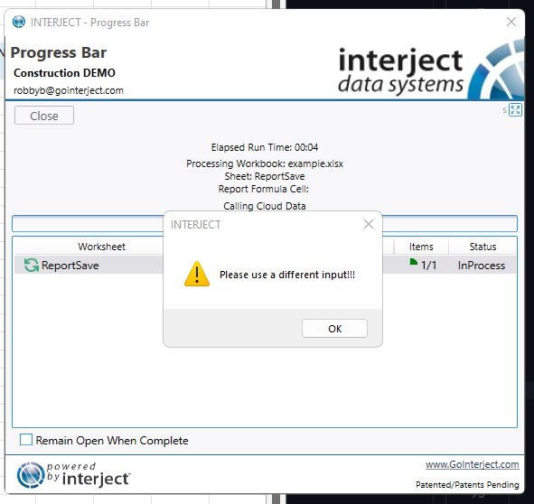
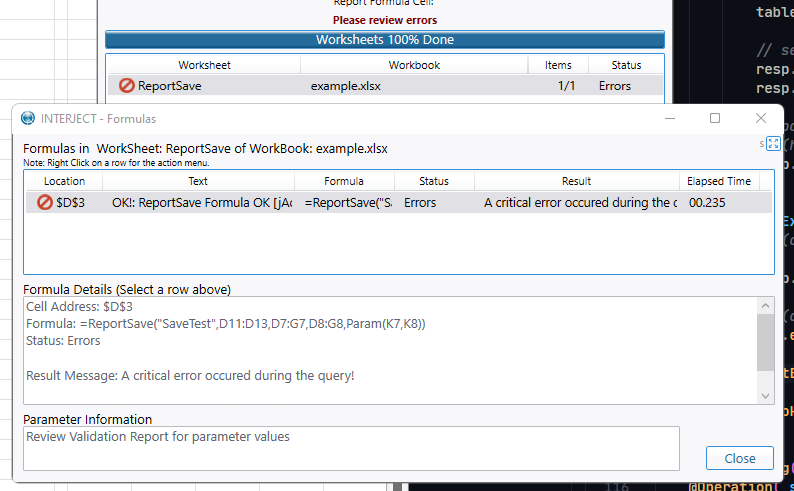
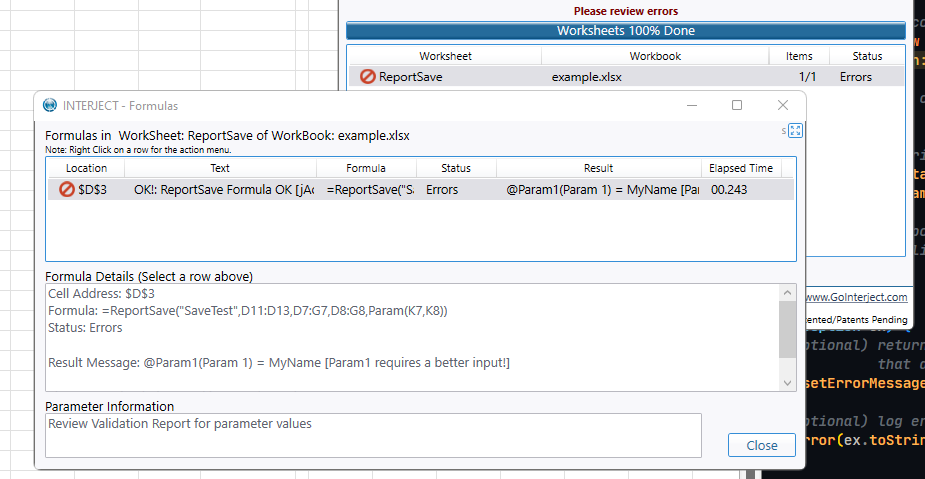
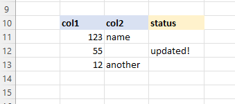

Responding with Messages
There are numerous ways to return messages to users both at the data row level and the application level.
User Messages
User Messages can be configured on the response object by setting the UserMessage property of the InterjectResponse object before returning the response. This provides a popup in the addin to the user.
using Interject.Api;
// construct a response
InterjectResponse response = new(interjectRequest);
// set a user message
response.UserMessage ="Please use a different input!!!";
// return response
return response;

Error Messages
Error Messages can be configured on the response object by setting the ErrorMessage property of the InterjectResponse object before returning the response. This describes an error in the formula details field of the pull\save window.
using Interject.Api;
// construct a response
InterjectResponse response = new(interjectRequest);
// set a user message
response.ErrorMessage ="A critical error occured during the query!";
// return response
return response;

Data Portal Formula Parameter Error Messages
Error Messages can also be specified for specific parameters by setting the validation attribute seen below.
using Interject.Api;
// construct a response
InterjectResponse response = new(interjectRequest);
// set a error message for a specific parameter
interjectRequest.GetParameter("Param1").UserValidationMessage = "Param1 requires a better input!";
// return response
return response;

ReportSave Result Columns
The ReportSave function has the ability to send data from the sheet to a data api or database. In addition, this function also can populate the spreadsheet with data returned from the data api or database via the ResultsRange. When this parameter is defined in the Excel report, the columns included in this range will be populated with the corresponding columns in the data returned to interject.
Example Data Sent To the API From Interject
// data the api gets from excel
TableName: Table1
Columns: Row, col, col2,
Data: 11, 123, name,
12, 55, null,
13, 12, another,
Add A Status Column and Set the Data
using Interject.Api;
// this adds a column for status, then updates a row with a status message for the user
IdsTable table = requestContext.XmlDataToSave;
table.AddColumn(new("Status"));
table.Update("Status", 1, "Updated!");
Example Data Sent Back To Interject From the API
// data the api sends back to excel
TableName: Table1
Columns: Row, col, col2, status,
Data: 11, 123, name, null,
12, 55, null, updated!,
13, 12, another, null,
What Is Displayed in the Report
